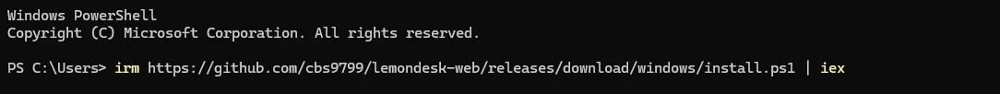
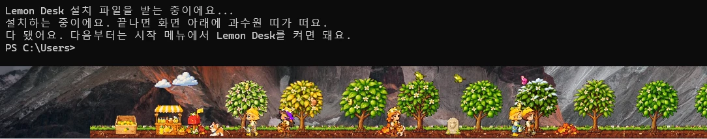

A strip that never
covers your work
The orchard lives in a 72pt strip just above the Dock. Clicks pass straight through to the windows underneath, and it hides itself when you use a full-screen app. As the orchard grows the strip stretches to the width of your screen, and you can hold ⌥ (Alt on Windows) and scroll to see fields beyond that. Clouds drift, birds fly by, butterflies gather on blossoming trees, and three dogs wander around guarding the house.

Drop by once or twice a day
to sell, plant, and grow
A minute or two at lunch and before you leave work is plenty. Sell the crate that filled up overnight, and bring in twenty kinds of trees one by one, from Eureka lemons to kumquats, blood oranges, hallabong, pomelos, and golden lemons. There are special trees too, like the Moonlight lemon that only fruits at night and the Snowflake yuja that grows faster in winter. When the field is full, clear the brush to the right and keep expanding; dig around and you’ll turn up old things like a well or a treasure chest. Open a lemonade stand to turn fruit into lemonade, fruit syrup, and marmalade that sell for more, and fill visiting customers’ orders for tips. Rain, snow, and wind roll through as well.

Sell and plant from your phone,
even when your computer is off
Turn on Phone view in Settings and scan the QR code once. Your orchard shows up in your phone’s browser looking just like the strip (busy workers, dogs, clouds and butterflies included), with the same crate and time-until-full as on your computer, and you can sell, plant, hire workers, help neighbors, send scrumping raids, and even rearrange decorations and outfit colors. If your computer is asleep or off, what you do on the phone is queued and applied as if it happened at that moment when it wakes up; watering and gifts for neighbors go out right away. No app to install, no sign-in, and it works away from home. On Mac or Windows you can also turn on AI Connection in Settings, click [Connect] next to Claude or Codex, and hand the orchard over in plain words: “sell everything,” “help my neighbors.” Using a work Mac, a home Mac, and a Windows PC? Turn on Device Sync and link them with one code to keep growing the same orchard (it grows on one device at a time and moves with you when you switch).

Busy day?
Let Lemon Robot handle it
Lemon Robot, made by one of our players, stands at the left end of the strip and turns into a drone to fly off and do the work.
- Sells your crate every five minutes
- Buys whichever upgrade pays for itself fastest
- Hover over it to see what it did today and what’s next
More: new workplaces, co-op and market, neighbors, workers, style, the Lemon Workshop, the Book
When the orchard is grown,
a new workplace
Once the orchard matures, you choose a career: a Field with crops for every season, a Ranch with chickens, cows, sheep, and bees, the Seaside where you harvest laver, oysters, and abalone with the tides, or an Orchard Workshop where you age dried lemon and lemon curd. Workers use the right tool for each job: they pull up radishes, milk the cows, and row out over the coral garden to haul in sea lines. The animals react, too. Cows moo when milked, freshly sheared sheep shake themselves off, and workers high-five each other. Rare surprise moments are saved to the Book. Even before you choose, you can set your heart on a path and a little emblem appears on the strip. Earn Expertise as your career grows to open the next stage, and at the fifth stage you become a Master who crafts items unique to that career. The strip can switch between the orchard and your new workplace, or change on its own to whichever one has a full crate.

The co-op, the market,
and reading the weather
The Co-op warns you two days ahead of typhoons, droughts, cold snaps, and red tides, and puts disaster insurance, price insurance, a starter loan, and today’s prices in one place. Delivery orders arrive every week, and now and then an old peddler pushes his cart in to sell rare goods. At the Market you buy and sell with other orchards for co-op coins, and if you post something you’re looking for, you’ll be told when someone lists it. You can send seeds, young animals, and fry to neighbors, and trade notes made of set phrases.

Water each other’s trees,
trade fruit with neighbors
In Find Neighbors, send a request to any orchard you like; once they accept, you’re neighbors (you can also decline or block requests). For friends, just send an invite link. Water a neighbor’s trees twice a day (morning and afternoon) to help their orchard grow faster, and your worker walks over to their strip to water and wave hello. For a much newer neighbor you can send a worker on a visit, plus a basket of pricey fruit and saplings they haven’t unlocked yet. When they graduate, you get a teacher’s flag. As Thanks build up you unlock decorations like benches, flower pots, and birdhouses, and neighbors pull the weeds that pile up while you’re away.

Workers who change
as they level up
Gear changes at levels 5, 10, 15, and 20, from an iron shovel and gloves to a tool belt, a silver basket, and finally golden tools and a lemon-blossom crown. From level 10 you can hire one more worker per role, each with their own look, so six work together. Hire Dodam the manager and they’ll sell whenever the crate fills, plant empty plots, and even pick and buy your next upgrade, so the orchard keeps going over the weekend. With Custom Dodam you line up tasks in slots (expand land, train workers, unlock new trees, scrumping, help neighbors) in the order you want. Slots grow as Dodam levels up; you can also hand Dodam a goal instead, as a Thrifty, Collector, Foreman, Boss, Gardener, Barista, or Pioneer Dodam, and their haggling improves too.
The Book holds special lemons, bottle recipes, a sky diary, and a worker album, and quirky and hidden challenges unlock titles and rewards like your very own lemon variety. On the Orchard Board, everyone’s orchards move, you react with stamps, and making the weekly highlights earns a trophy.

An orchard
styled your way
Pick from Sunshine, Spring, Sunset, and Moonlit themes and seven outfit colors for each worker. The orchard follows the time of day: warm in the morning, glowing at sunset, and lit by lanterns and fireflies at night.

Make your own trees and friends
in the Lemon Workshop
As your crate grows, the Lemon Workshop opens. Make trees and fruit at the Tree bench, guests that roam your strip at the Friend bench, and decorations at the Trinket bench. Pick what to make, tap a shape and colors you like, and one button puts it on your strip. Want more? Stack parts in layers, paint colors and patterns, and touch up a few pixels by hand. Your trees grow in a variety garden next to the crate, and your friends walk, hop and fly along the strip. Every work carries your Lemon Seal, a signature you choose once. Send works to neighbors with a tap or to any friend with a single link, put works you find while browsing right on your strip, and the week’s Most Spread Work rides the Show Cart across every orchard strip.

Twenty trees to collect,
twenty hidden secrets
Every tree you plant and fruit you pick goes into the Book, while trees you haven’t met yet wait as silhouettes. Find the secrets hidden on Monday mornings, at quitting time, and on holidays to fill your secrets log. Save and share each week’s harvest as a card, and watch the orchard change with the seasons: spring blossoms, a lemonade stand, falling leaves, and snowmen.

On Windows,
install with one line
Paste the line below into PowerShell. It downloads the installer, checks that it matches the published file, and then installs. No browser warning, no “Windows protected your PC” prompt, and no admin rights needed.
irm https://github.com/cbs9799/lemondesk-web/releases/download/windows/install.ps1 | iexRight-click the Start button and choose Terminal (not the one marked Admin). On Windows 10 it’s Windows PowerShell.

Paste the line (Ctrl+V or right-click) and press Enter.

In a minute or two you’ll see the “done” message and the orchard strip appears at the bottom of your screen. Next time, start Lemon Desk from the Start menu. The app keeps itself updated.

Why does the browser download show a warning?
- Lemon Desk for Windows is a free beta without a code-signing certificate yet (we’re getting one). So when you download the installer in a browser, Windows treats it as coming from an “unknown publisher” and warns you.
- The one-line install fetches the same installer, but first checks it against the SHA-256 value published next to it on GitHub and stops if they differ. You can read the script to see exactly what it does.
- It installs only into your user folder (
%LOCALAPPDATA%\LemonDesk) and uses no admin rights, drivers, or background services. To remove it, go to Settings > Apps > Installed apps and uninstall Lemon Desk. - Prefer the installer? Download it here, then click More info → Run anyway the first time.
- On Windows 11 PCs with Smart App Control turned on, the app may not open either way until it’s signed.
The beta is free.
- No adsNothing pops up while you play.
- No in-app purchasesThere are no paid items to make things grow faster.
- No gacha, no login rewardsIt never nags you to come back every day.
- Only what’s neededYour orchard stays on your computer; the server gets only what the features you turn on need. Details